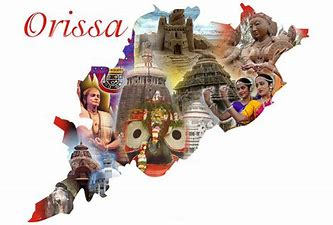
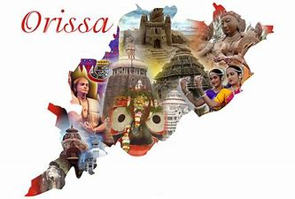

Odisha , is an Indian state located in Eastern India. It is the 8th largest state by area, and the 11th largest by population. The state has the third largest population of Scheduled Tribes in India. It neighbours the states of West Bengal and Jharkhand to the north, Chhattisgarh to the west, and Andhra Pradesh to the south. Odisha has a coastline of 485 kilometres (301 miles) along the Bay of Bengal. The ancient kingdom of Kalinga, which was invaded by the Mauryan emperor Ashoka (which was again won back from them by king Kharavela) in 261 BCE resulting in the Kalinga War (The lethal war with Kalinga transformed the vengeful Emperor Ashoka into a stable and peaceful emperor, and he became a patron of Buddhism), coincides with the borders of modern-day Odisha.[18] The modern boundaries of Odisha were demarcated by the British Indian government when Orissa Province was established on 1 April 1936, consisting of the Odia-speaking districts of Bihar and Orissa Province.[18] The first of April is celebrated as Utkala Dibasa. Cuttack was made the capital of the region by Anantavarman Chodaganga in c. 1135,[20] after which the city was used as the capital by many rulers, through the British era until 1948. Thereafter, Bhubaneswar became the capital of Odisha.